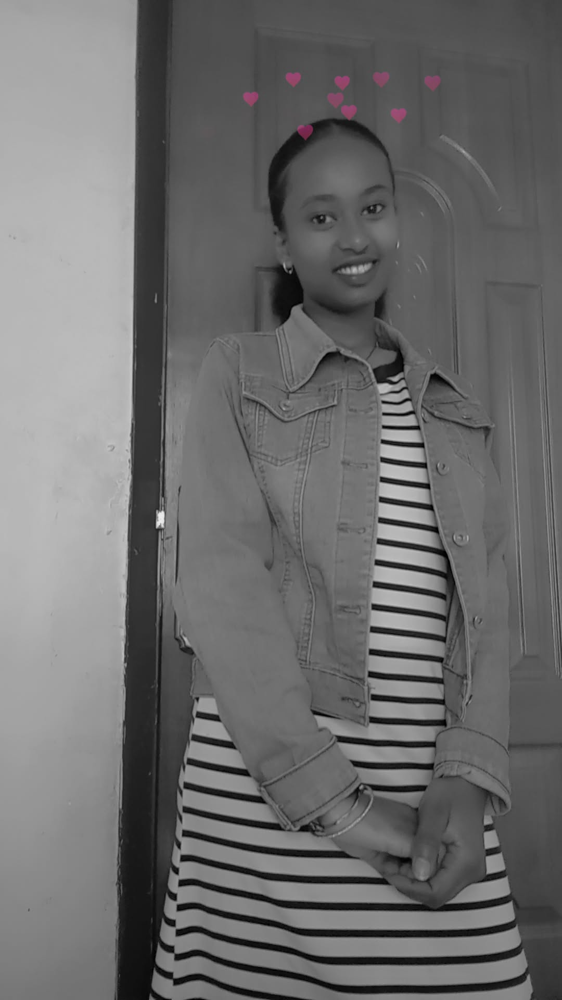

My name is Rediet Enkuselassie, and I am a grade 11 student in bori secondary
school.I was born in 2000 on april E.C, I have 3 sisters and 2 brothers.I like list
en and sang a song because it makes me happy.from a young age i have been
curious about hoe technology works, and this curiosity has inspired me to
explore the world of computers,website development,and digital creativity.
I enjoy spending creativity my time learning new skills,specially in designing
and building websites, where i can turn my ideas into real and useful projects.
As a student, i am dedicated to my education and always strive to improve my
self both academicaly and personally.I belive that education is a powerful tool
that can change lives,and i am committde to working hard to achiave my goals.
I am particularly interested in technology innovation and i enjoy solving probl
ems,thinking creatively, and discovering new ways to make things better. IN a
ddition for my studies, i like to challenge my self by practicing coding and exp
loring different website designs. these experiences help me grow my confidence
and prepare me for my future career. i believe in values such as discipline, pers
everance,and continuous learning,and i try to apply them in everything i do.
My dream is to become a skilled software developer and create impactful digital
solutions that can help my community and beyond. I want to contribute to build
ing modern systems, educational platforms,ans useful applications that make life
easier for people.I am excuited about the future and motivated to keep learning,
improving,and achieving success step by step and the last I want to say thankyou
my GOD because with out god all things are impossible.
